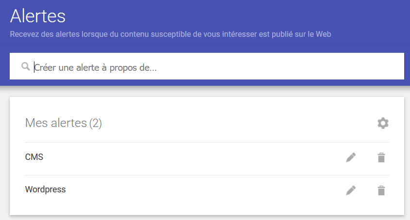

Définition
Le principal avantage de la Veille Technologique est d'identifier ou de prévoir les innovations dans les business units. Les ressources de la veille technologique constituent des informations stratégiques importantes pour anticiper, développer et exploiter les inventions. La mise en place d'une observation technique permanente dans une zone définie peut répondre à plusieurs objectifs. Cela jette les bases pour identifier et comprendre les informations clés sur les concurrents et les technologies. C'est une méthode de collecte d'informations stratégiques sur les concurrents et leurs innovations.
THÉMATIQUE CHOISIE
- Le CMS wordpress

- WordPress est reconnu comme l'un des outils les plus efficaces pour le référencement dans les moteurs de recherches. Le CMS possède en effet de solides capacités dans ce domaine. Son code source est notamment optimisé à chaque mise à jour et la gestion des permaliens, des catégories et tags en est facilitée.
- Le fait que WordPress soit open source lui a permis de développer une immense communauté, très active, ce qui est l’une de ses plus grandes forces aujourd’hui.
- WordPress doit son succès à sa simplicité, sa modularité et son immense communauté de contributeurs.
- Il existe des centaines de CMS dont une grande partie est open source (Joomla!, PrestaShop, etc.), mais WordPress se démarque du lot. C’est en effet, et de loin, la solution la plus populaire pour créer des sites Internet. On peut même dire qu’il écrase complètement le marché !
- --> WordPress propulse près de 40 % des sites Internet dans le monde (près d’un site sur trois !).
--> Plus de 500 sites WordPress sont créés chaque jour !
--> 64 % des sites utilisant un CMS tournent sur WordPress (WordPress possède plus de la moitié du marché des CMS).
--> Surtout, le second CMS le plus utilisé, Joomla!, ne détient qu'environ 20 fois moins de part de marché que WordPress !
ressources utilisé
- Afin de développer cette veille j'ai effectué des recherches sur de nombreux articles, utilisant plusieurs sites d'information différents :
- Redjan
- J’ai ensuite rajouté un autre système de veille , le « Google Alert » , c’est une alerte Google qui est un email envoyé par Google listant toutes les pages web qui ont mentionné le mot ou l’expression sur laquelle vous avez placé une alerte.
- 
Les points Forts de ma veille :
- les informations sont quasiment tous utiles et de qualités
- le flux d’information est très élevé
- Facile d’utilisation et rapide d’accès
- Bonne Organisation sur Pearltress
Les points faibles de ma veille :
- Trop d’informations , difficiles de tout lire et surtout trié (surtout avec Google Alert)
- Beaucoup d’informations se ressemblent et sont identiques
Conclusion
Le CMS WordPress, CMS veut dire content management system ça nous permet de créer des sites web sans coder. La raison pour laquelle J’ai choisi WordPress est simple c’est qu’aux alentours de 34%sdes sites web dans le monde son réalisé sur WordPress dû au fait c’est un progiciel Gratuit et open source n’importe qui peut utiliser le code source et installer dans son propre serveur et surtout n’importe qui est capable d’utiliser Word press. En tant que développeur je trouve qu’il est nécessaire de s’informer sur ce genre de logicielle qui prend de plus en plus d’ampleur grâce aux extensions et aux nouveaux thèmes et c’est un progicielle qui est en quelques sortes notre concurrent.